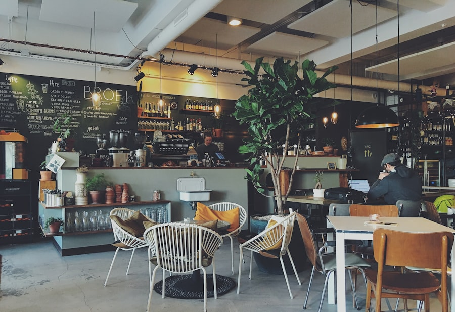

Specialty Coffee & Sweets
自家焙煎のコーヒーと、季節の手作りスイーツ。忙しい日常に、ほっと一息つける場所。
Our Story
CAFÉ KOMOREBIは、産地にこだわったスペシャルティコーヒーと、毎朝店内で焼き上げるスイーツが自慢のカフェです。大きな窓から差し込む光の中で、ゆったりとした時間をお過ごしください。
Menu
Space
木の温もりを感じるインテリアと、観葉植物に囲まれた落ち着いた空間。一人でも、大切な人とでも。

混雑時はお待ちいただく場合があります。事前予約をおすすめします。
※ デモサイトのため予約ボタンは機能しません
Access